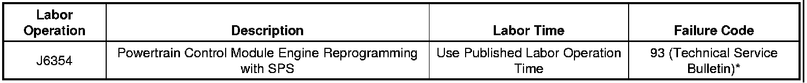

A/C - Compressor/Serpentine Belt Noise
TECHNICALBulletin No.: 07-01-38-010A
Date: October 06, 2009
Subject: Air Conditioning (A/C) Compressor and/or Serpentine Belt Noise at Vehicle Start-up (Reprogram Powertrain Control Module (PCM))
Models:
2007-2008 Cadillac Escalade Models
2007-2008 Chevrolet Avalanche, Silverado, Suburban, Tahoe
2007-2008 GMC Sierra, Yukon Models
Equipped With Air Conditioning (RPOs CJ2 or CJ3)
Supercede:
This bulletin is being revised to update the Condition and Correction information. Please discard Corporate Bulletin Number 07-01-38-010 (Section 01 - HVAC).
Condition
Some customers may comment on air conditioning (A/C) compressor slugging and/or serpentine belt or pulley rattle noise at vehicle start-up in warmer outside ambient temperature conditions. Others may describe the noise as a belt chirp or as a thumping/grinding noise coming from the A/C compressor at vehicle start-up.
Cause
This condition may be caused by the A/C compressor trying to move liquid refrigerant through the system.
Correction
- A revised PCM calibration has been released to address this condition. Reprogram the PCM using the Service Programming System (SPS) with the latest calibration available on TIS2WEB. Refer to the SPS procedures in SI.
- When using a multiple diagnostic interface (MDI) for reprogramming, ensure that it is updated with the latest software version.
- When using a Tech 2(R) for reprogramming, ensure that it is updated with the latest software version.
- During programming, the battery voltage must be maintained within the proper range of 12-15 Volts. Only use the approved Midtronics(R) PSC 550 Battery Maintainer (SPS Programming Support Tool EL-49642) or equivalent during programming.
Warranty Information
Note
*Please use Failure Code 93 for any warranty claims submitted using this bulletin.

For vehicles repaired under warranty, use the table above.

Disclaimer